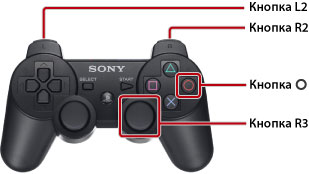

О данном Руководстве
Это руководство содержит подробную информацию по использованию системного программного обеспечения PS3™. Для получения информации об аппаратных функциях и мерах предосторожности при использовании продукта см. документацию, прилагаемую к системе.
Примечания по просмотру руководства пользователя
Рекомендуется просматривать руководство при наличии следующих условий:
- Включите JavaScript в браузере. Если JavaScript отключен в используемом браузере, данное руководство может отображаться неправильно или совсем не отображаться.
- При просмотре руководства на ПК используйте приложение Microsoft Internet Explorer 6.0 или более поздней версии.
Просмотр руководства с помощью системы PS3™
Для просмотра руководства в системе PS3™ с помощью  (Веб-браузер) используйте основные функции, приведенные ниже.
(Веб-браузер) используйте основные функции, приведенные ниже.
| Кнопки направлений | Перемещение указателя на ссылку. |
|---|---|
Кнопка  |
Открытие ссылки. |
| Правый джойстик | Прокрутка в любом направлении. |
| Кнопка L1 | Возврат к предыдущей странице. |
Команды, используемые для изменения масштаба.

| Нажатие на кнопку R3 (правый джойстик) | Использование функции масштабирования изображения/восстановление исходного изображения. |
|---|---|
| Удерживание нажатой кнопки L2/кнопки R2 при масштабировании | Увеличение/уменьшение изображения. |
Удерживание нажатой кнопки  при масштабировании при масштабировании |
Восстановление исходного изображения. |
Объяснение обозначений кнопок в данном руководстве
Кнопки системы PS3™, используемые для ввода и отмены параметров или команд, могут различаться в зависимости от региона и продукта. В версиях данного руководства на английском и других европейских языках знак используется для ввода элемента, а знак для отмены элемента, тогда как в версиях на других языках знак используется для ввода, а знак для отмены.
Печать руководства
Можно распечатать руководство с помощью компьютера. Выполните приведенные ниже шаги, чтобы распечатать сразу несколько страниц.
1. |
Чтобы отобразить [Указатель руководства] данного руководства, воспользуйтесь программой Microsoft Windows Internet Explorer. |
|---|---|
2. |
В меню "Файл" программы Internet Explorer выберите команду [Печать]. |
3. |
Для печати руководства выберите вкладку [Параметры] и отметьте флажком параметр [Печатать связанные документы]. |